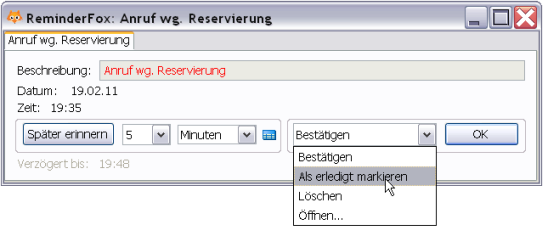
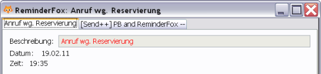
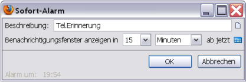
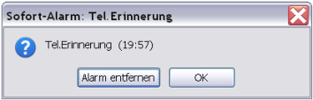

Inhalt |
Termine und Aufgaben, die in Reminderfox gespeichert sind, können auf unterschiedliche Art
Hinweise für den Benutzer auslösen.
Mit dem 'Foxy' Icon auf der Thunderbird Menüleiste wird auf anstehende
oder fällige Termine hingewiesen, der Kursor auf dem 'Foxy' öffnet eine Übersicht
über anstehende Termine oder Aufgaben.
In einstellbaren Zeitintervallen erscheint ein Dialogfenstern mit Meldungen zu den Ereignissen.
Ein Alarmsystem öffnet zu jeweils vorbestimmten Zeiten ein Dialogfenster.
In diesem läßt sich direkt bestimmen wie mit dem Alarm, der Meldung / dem Termin zu verfahren ist.
Zusätzlich stellt Reminderfox auch ein Alarmsystem für kurzfristige Ereignisse zur Verfügung.
Diese sogenannten 'Sofort' Alarme,
die nicht in der Liste gespeichert werden,
exisitieren auch nur während der aktuellen Sitzung.
Normale Benachrichtigungen werden aus der Listeder eingegebenen Termine mit den dort jeweils für die Benachrichtigung ausgewählten Zeitpunkt erzeugt. Dies kann so eingestellt werden, dass die Benachrichtigung vor dem Ereignis oder genu zu dem Ereignistermin erscheint.
Zu dem vorbestimmten Zeitpunkt wird ein entsprechender Benachrichtigungsdialog angezeigt:


Sind mehrere Alarme aufgelaufen, so werden sie in Tabs's angezeigt. Diese Benachrichtigung kann einfach bestätigt werden oder es werden verschiedene andere Optionen aus einem Menü gewählt:
"Sofort" Alarme/Benachrichtigungen werden mittels der Schleife auf der Statusleiste angelegt. Dies erlaubt es, eine Benachrichtigung zu erstellen für etwas, das sich kurzfristig ereignet. Beispiel: für einen erforderlichen Rückruf: "Tel.Erinnerung" in 15 Minuten.
Achtung, dies sind "flüchtige" Termine, die nicht zur Terminliste hinzugefügt werden!
Ein Beispiel für eine Termin Benachrichtung in 15 Minuten:

Nach 15 Minuten erscheint dieses Fenster:

Dies kann nun mit "Später erinnern" verzögert oder mit OK einfach bestätigt und gelöscht werden.